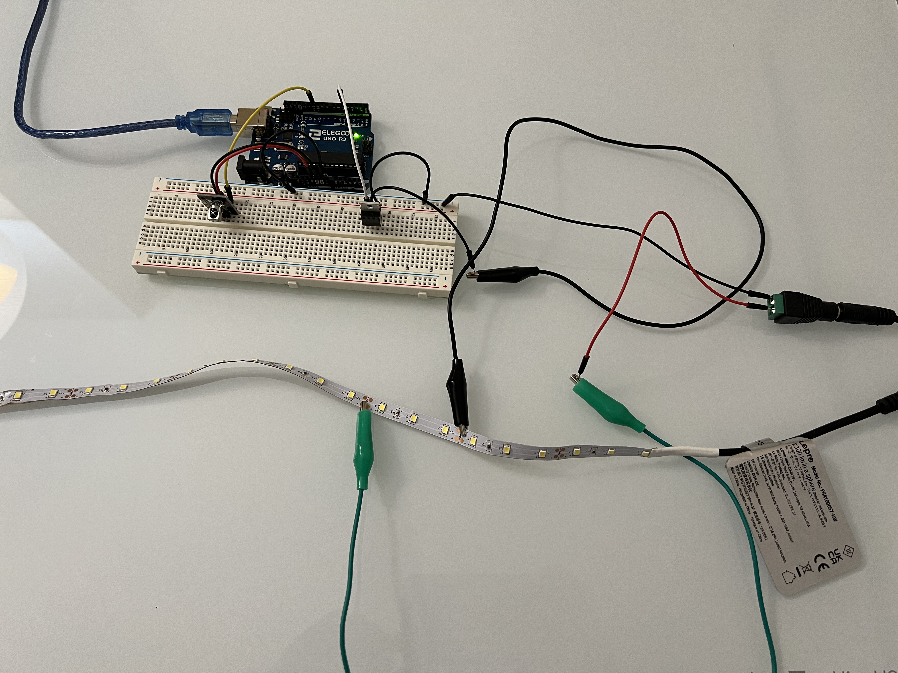

Working circuit
Feb 16, 2024
Image of A5 Circuit
Closeup of Arduino and IR sensor
For Assignment 5, I created a circuit which allowed me to control an LED strip with an IR remote.
For the IR Remote sensor, I used the IRremote library:
#define DECODE_NEC 1 // defines decoding protocol
#include <IRremote.h> // IRremote by shirriff, z3t0, ArminJo: https://github.com/Arduino-IRremote/Arduino-IRremote
int LED_PIN = 5; // pin attatched to transistor for LED strip
int IR_RECEIVE_PIN = 11; // pin set to be infared input
bool ON_STATE = false; // sets initial on state to be off
int BRIGHTNESS = 125; // sets initial brightness to be 125
void setup() {
Serial.begin(9600); // sets serial monitor for a baud rate of 9600
// [FROM CLASS CODE] prints file, date, and IRremote version number
Serial.println(F("START " __FILE__ " from " __DATE__ "\r\nUsing library version " VERSION_IRREMOTE));
IrReceiver.begin(IR_RECEIVE_PIN, ENABLE_LED_FEEDBACK); // initializes sensor at specified pin
Serial.print(F("Ready to receive IR signals at pin ")); // prints confirmation message
Serial.println(IR_RECEIVE_PIN); // prints infrared pin number
// there is no need to use pinMode as I am using analogWrite. However, when the pin is outputting 0V, the transistor
// is not letting current flow. When it is 5V, it is allowing current.
analogWrite(LED_PIN, 255); // turns LED strip on initially to test functionality
delay(1000); // waits 1 second
analogWrite(LED_PIN, 0); // turns off LED
}
void loop() {
// runs if sensor is recieving data
if (IrReceiver.decode()) {
// [FROM CLASS CODE] Prints summary of recieved data
IrReceiver.printIRResultShort(&Serial); // Prints summary
if (IrReceiver.decodedIRData.protocol == UNKNOWN) { // Runs if protocol recieved is unknown
IrReceiver.printIRResultRawFormatted(&Serial, true); // Prints error message
}
Serial.println(); // Prints new line
delay(200); // Delays 200ms to give time between button presses
IrReceiver.resume(); // Allows for receiving of next value
// runs if power, up, or down buttons are pressed
if (IrReceiver.decodedIRData.command == 0x45) { // if power button is pressed
ON_STATE = !ON_STATE; // turns power on/off
Serial.println(ON_STATE); // prints
} else if (IrReceiver.decodedIRData.command == 0x9) { // if up button is pressed
if (BRIGHTNESS < 255) { // as long as brightness is below 255
BRIGHTNESS+=25; // increase brightness by 255
}
Serial.println(BRIGHTNESS); // prints brightness
} else if (IrReceiver.decodedIRData.command == 0x7) { // if down button is pressed
if (BRIGHTNESS > 0) { // as long as brightness is above 0
BRIGHTNESS-=25; // lowers brightness by 25
}
Serial.println(BRIGHTNESS); // prints brightness
}
BRIGHTNESS = constrain(BRIGHTNESS, 0, 255); // constrains brightness between 0 and 255
if (ON_STATE) { // if LED strip on state is true
analogWrite(LED_PIN, BRIGHTNESS); // analogWrite to adjust the LED strip brightness with the transistor
} else { // if on state is false
analogWrite(LED_PIN, 0); // turns LED strip off
}
}
}
Working circuit